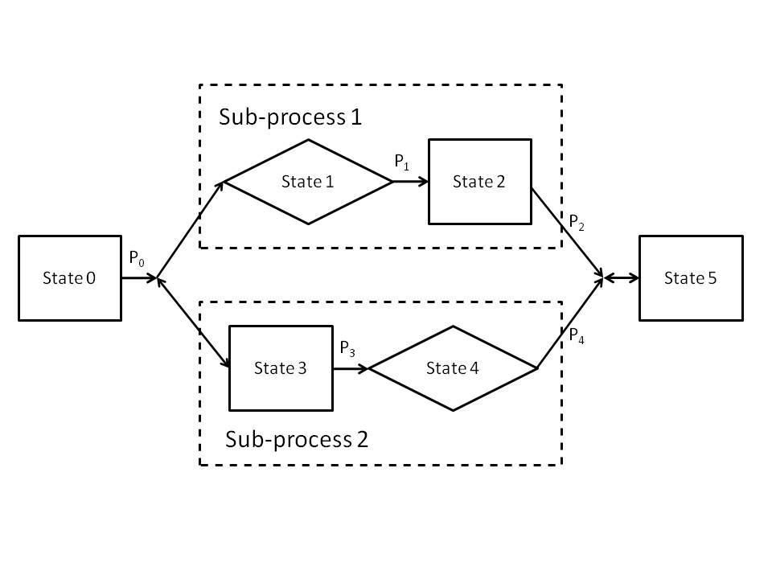
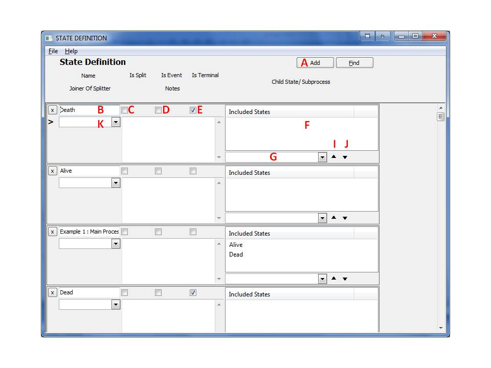

7 States
7.1 Overview of States:
States are representations of either discrete stages of a disease or of processes.

7.1.1 State Classifications:
States can be classified according to several types
- Normal State - a state in which a subject can remain or can progress into. Normal states are marked in the model above by black boxes (rectangles).
- Event State - an instantaneous state; a subject entering this state will exit it in the same simulation step. Therefore all transition probabilities from an event state must sum to 1. Event states are marked in the model above by a diamond.
- Splitter States - a division of one state into two or more parallel sub-processes. A splitter state requires a matching Joiner State in a valid model. A splitter state is represented in the diagram above by the black dot to the left of two or more arrows.
- Joiner State - a union of two or more parallel sub-processes into one state, essentially 'canceling out' a splitter state. A Joiner state is always linked with a specific Splitter state. A joiner state is represented in the diagram above by the black dot to the right of two or more arrows.
- Terminal State - when a terminal state is reached, the individual cannot progress into any other state and the simulation terminates for this individual. The terminal state is marked by a red box in the diagram above.
- Process - a set of states that represent an entire disease process; it may contain other sub-processes within itself. Processes are marked as dashed boxes in the diagram above.
There must be one Main Process for each model, containing all the other states. The states can be thought of as a tree structure, where a Main Process can contain states and/or sub-processes, and a sub-process contains states and/or other sub-processes, and so on. During simulation a subject can be in several sub-processes in parallel simultaneously.
The probability for progressing from a state to another during a simulation step is set by the user in Transitions. The probability of staying is a state in a simulation step is one minus the sum of probabilities to progress from that state into the following states.
7.2 Creating States
To set up a new state:
- From the main form, click the 'States' button on the left navigation pane.

- This form shows all states in the project. To add a new state, press the 'Add' button (A) on the top right of the form, and a new blank row will appear.
- Enter the title of the state in the 'Name' box (B).
- To define a state of type:
- Normal State: continue to next step.
- Event State: check box 'Is Event' (D).
- Splitter State: check box 'Is Split' (C).
- Joiner State: in drop-down box 'Joiner of Splitter' (K), select the name of the Splitter to be joined.
- Terminal State: check box 'Is Terminal' (E).
- If the state is a process/pooling state, meaning that it contains other states, make sure all the "child states" within the process have been created first (repeat from step 2). Next, select a "child state" from the drop-down box (G), and click the up arrow button (I). Repeat for all nested states. Remember, when a child state is a sub-process, all of its children are automatically included.
It is important to note that the order in which the child states of a sub-process are defined determine the sort order by which transitions are displayed to the user. So they should be defined sequentially. Note that once a sub-process has been referenced, it is difficult to make changes in the system since changes in a referenced sub-processes will be blocked by the system.
- When finished, close the States form to save the states. This will trigger validity checking of the data entered; if no error message is displayed, then the data has been saved to memory. Note that the information is not yet saved to a file.
7.3 Removing States from a Process
To remove a state from a process:
- In the States form, identify the process that you wish to modify.
- Highlight the state you wish to remove in the Included States box (F) of that process.
- Click the down arrow (J) to remove the state. Note: the state will not be completely deleted, it will only be deleted from the process.
To permanently delete a state:
- Remove the state from any processes, using steps above. If the state is itself a process, delete all reference to it from studies that use it as a main process. This may require deletion of other entities and may be difficult if the deletion candidate was extensively used.
- In the States form, identify the state that you wish to delete, and click the 'X' (delete) button at the left of that row. This may require deletion of other entities and may be difficult if the deletion candidate was extensively used.
7.4 State Indicator Parameters
Each State or Process has two state indicators associated with it. These state indicators are parameters that are set/reset during a simulation.
- Actual State Indicator - Uses the state name with spaces replaced by an underscore '_'. This state indicator will be set to 1 during simulation if the subject is present at this state at this simulation step.
- Entered State Indicator - Uses the state name with spaces replaced by an underscore '_' followed by the suffix _Entered. This state indicator will be set to 1 during simulation if the subject is entered into this state at this simulation step. This state indicator is set to 1 only if the state was entered in this simulation step and will be reset if the individual stays in this state or leaves it.
Sub-Process state indicators will be set to 1 if the user is in any state / sub-process within this sub-process. This means, for example, that the state indicator of the main process of a model used is simulation is always set to 1. States will generally behave the same with the exception of a simulation step where several sub-processes are joined by a joiner state. In this case, the sub-process indicators will be reset, while the state indicators will remain set until the next simulation step. This behavior allows cost calculations in this simulation step according to the states before the collapsing joiner state was reached.